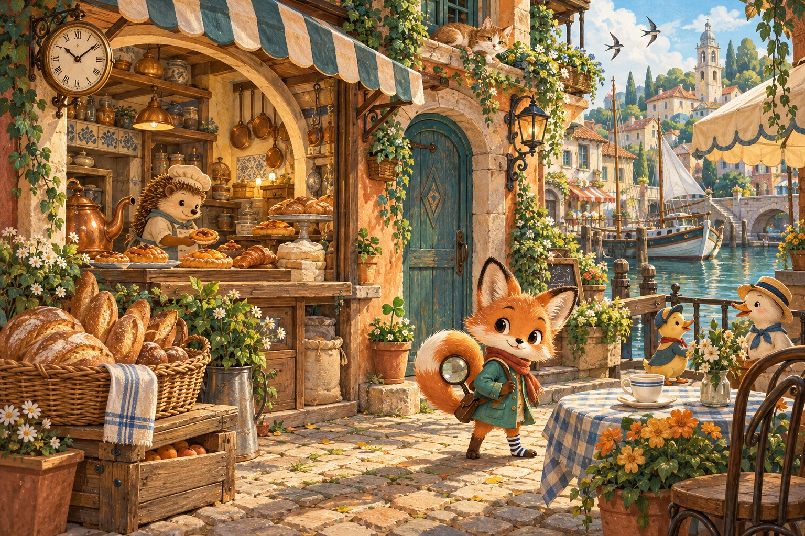
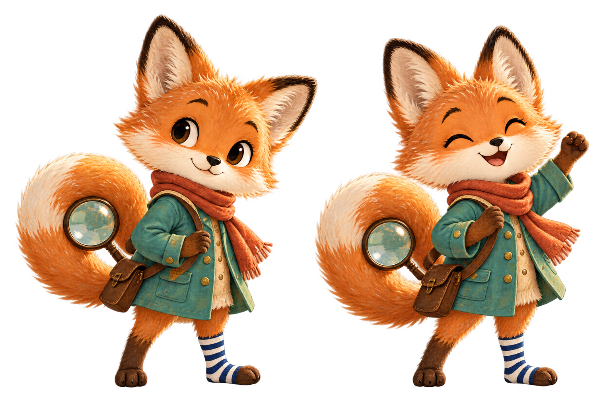

A FOX. A TOWN. A THOUSAND LITTLE STORIES.Some secrets
Some secrets
hide in plain sight.
The bakery is almost ready to open. Join Pip for one unhurried morning, and find the five things that changed.

CHAPTER 01The Apricot Bakery

MEET YOUR LITTLE DETECTIVE
Pip.
One striped sock.
One very curious tail.
CHAPTER 01 · WHISKER WHARF
The Apricot Bakery
0/ 5FOUND
01 THE MORNING WE REMEMBERUNTIMED
02 SOMETHING HAS CHANGEDTap either picture
Your discoveries are kept on this device.